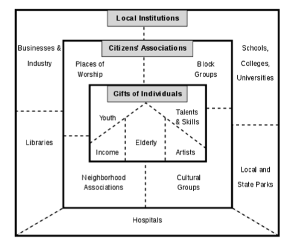

Our Mission
GIVE encourages our volunteers to reflect on life in the developing world and their own lives during trips, and ultimately empower them to harness their engagement and become sustainable development leaders when they return home.
GIVE is a Seattle based travel organization that unites international service, adventure travel, and academics to create a meaningful volunteer experience abroad. Jake Allison founded GIVE after studying the volunteer travel industry extensively and employing these practices in the field. His experiences led him to conclude that when run correctly, international excursions could serve as a powerful catalyst for change.
Responsibly run international service trips provide funding for projects that would otherwise be difficult for developing communities to obtain, in addition to generating direct tourism revenue. More importantly, when the correct context is provided, these trips become a vehicle for inspiring engagement in global citizenship.
GIVE strives to inspire this passion and then harness it for the greater good; providing meaningful assistance to communities in dire need, while serving as respectful guests abroad. Volunteers are constantly immersed in meaningful projects, interactions with our host communities and unforgettable adventures. This leads to the development of lifelong memories and friendships, both among volunteers and local community members. Our programs deeply inspire participants to act on behalf of the developing world.
Asset-Based Community Development (ABCD)
Widely considered the best practice of sustainable development, ABCD focuses on honing and leveraging existing strengths within the community. Related to tenets of empowerment, it postulates that solutions to community problems already exist within a community’s assets.
There are five key assets in any given community: individuals, associations, institutions, physical assets, and connections. These assets are broken down into three categories: Gifts of individuals, Citizens’ Associations, and Local Institutions. Asset maps are used in lieu of needs maps, which focus solely on negative aspects of communities. Asset maps, on the other hand, focus on community abilities, skills, and strengths in order to build its future.
Community Resources at Work:
Building community capacity is at the heart of ABCD’s development approach. Through it, we engage directly with community groups, residents, and other local entities to conduct research that helps prepare them to achieve their own community building objectives.
There are five key assets in any given community: individuals, associations, institutions, physical assets, and connections. These assets are broken down into three categories: Gifts of individuals, Citizens’ Associations, and Local Institutions. Asset maps are used in lieu of needs maps, which focus solely on negative aspects of communities. Asset maps, on the other hand, focus on community abilities, skills, and strengths in order to build its future.
Learn more